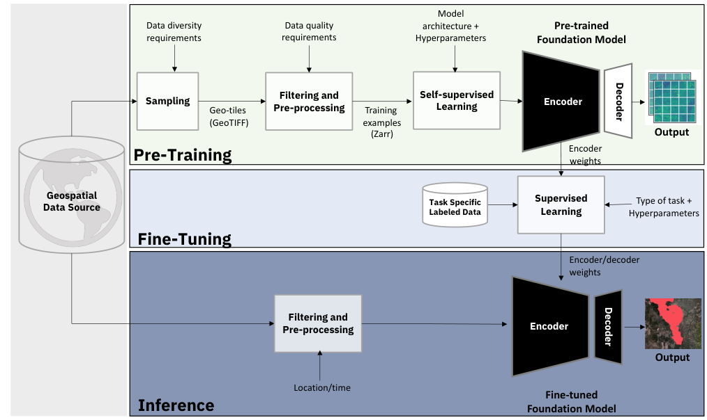
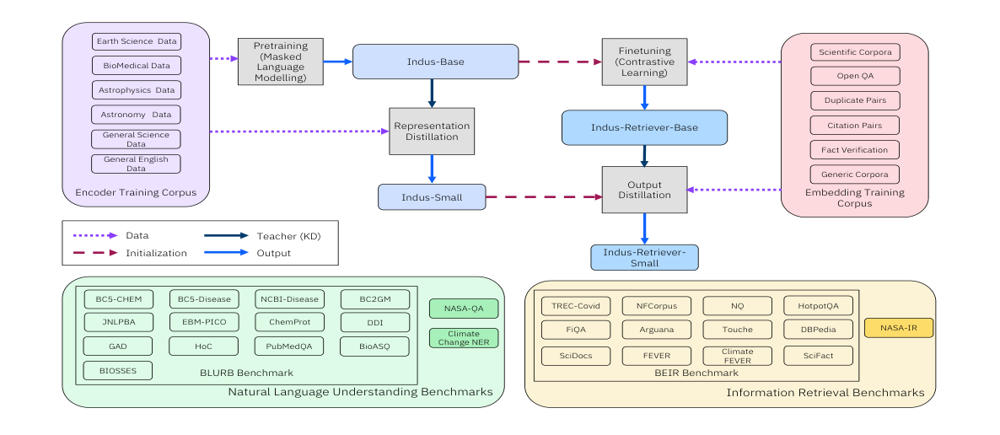
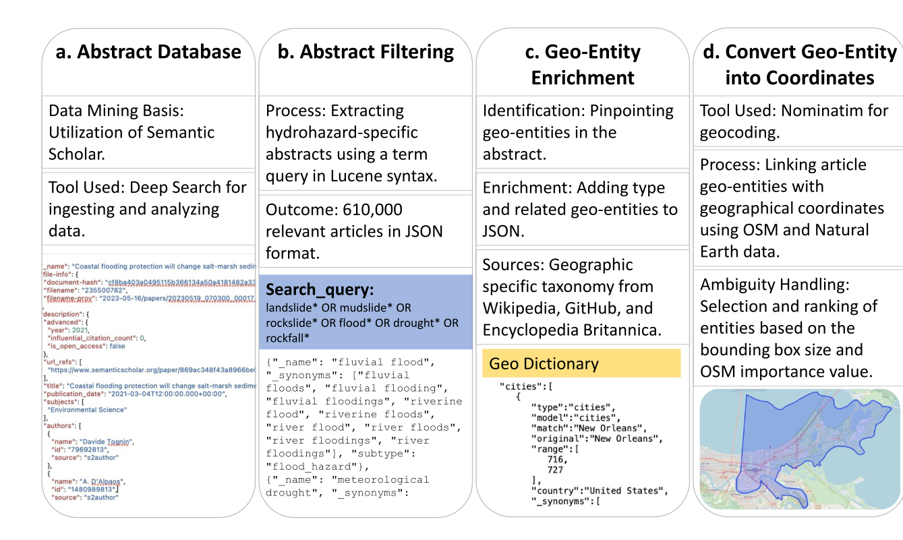
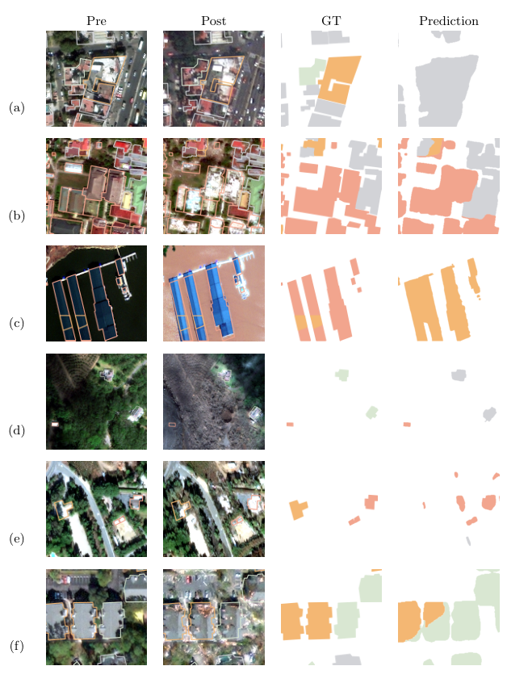

kEarth
Scientific language models, geospatial learning and evidence for understanding a changing planet.
2023 · arXiv preprint arXiv:2310.18660 · Preprint
J Jakubik, S Roy, CE Phillips, P Fraccaro, D Godwin, B Zadrozny, et al.

Pre-training, fine-tuning and inference for geospatial foundation models. Figure 1 · J Jakubik et al., 2023Read publication · Google Scholar
2024 · Conference on Empirical Methods in Natural Language Processing (EMNLP), 98–112
B Bhattacharjee, A Trivedi, M Muraoka, M Ramasubramanian, et al.

INDUS scientific language models, retrievers, distilled models and evaluation benchmarks. Figure 1 · B Bhattacharjee et al., 2024Read publication · Google Scholar
2024 · Earth's Future 12 (10), e2024EF004590
L Stein, SK Mukkavilli, BM Pfitzmann, PWJ Staar, U Ozturk, C Berrospi, et al.

Literature search, filtering and geolocation used to map hydro-hazard research. Figure 1 · L Stein et al., 2024Read publication · Google Scholar
2023 · Proceedings of the AAAI Symposium Series 2 (1), 115-123
M Nitsche, SK Mukkavilli, N Kühl, T Brunschwiler

Pre- and post-disaster imagery, damage labels and model predictions from xBD. Figure 1 · M Nitsche et al., 2023Read publication · Google Scholar
2022 · Hydrological Processes, e14742
L Stein, SK Mukkavilli, T Wagener
Read publication · Google Scholar
2023 · 2023 IEEE International Conference on Big Data (BigData), 3350-3354
R Kienzler, J Schmude, N Simumba, B Blumenstiel, M Freitag, D Kimura, et al.
Read publication · Google Scholar
2019 · Atmospheric research 215, 149-164
SK Mukkavilli, AA Prasad, RA Taylor, J Huang, RM Mitchell, A Troccoli, et al.
Read publication · Google Scholar
Chaired workshops
NeurIPS 2020 — AI for Earth Sciences · ICLR 2020 workshops